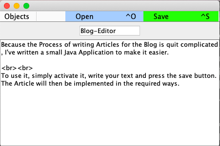

Because the Process of writing Articles for the Blog is quit complicated, I've written a small Java Application to make it easier.
To use it, simply activate it, write your text and press the save button.The Article will then be implemented in the required ways.
